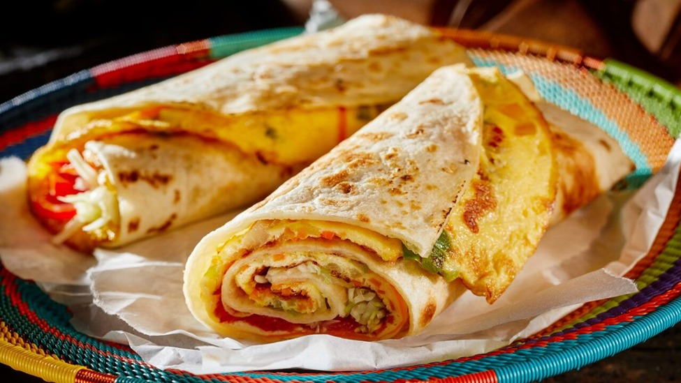
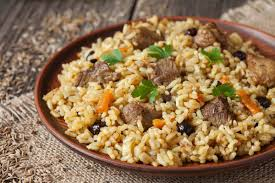

Our Delicacies

Matooke
Mashed and served with a curry of your choice
Price: $2.5
A staple food in Central Uganda. Our matooke is steamed on low heat, and mashed to a soft,
starchy consistency. A spicy curry or groundnut sauce always compliment matooke. The flavor
is in the sauce. This meal comes with vegetables
Category: Lunch
Rolex
Chapatti, 2 eggs, shredded cheese, minced chillies, tomatoes, onions and cabbage
Regular: $5 Large: $8
A popular snack on the streets of Kampala. The rolex is a vegetable omelet rolled up in a chapati,
its name a cheeky reference to the watch brand. Minced chiles add a bit of heat, with fresh chopped
cilantro as a garnish.
Category: Breakfast

Luwombo
Choice of Groundnuts, Lamb, Beef or Chicken
- Chicken Luwombo: $9.8
- Beef/Lamb Luwombo: $10.5
- Groundnuts Luwombo: $7.6
We prepare Luwombo the way it has been made for generations
in Buganda. We use only the freshest ingredients and slow cooking,
allowing the flavors to meld together and create a truly unforgettable taste and aroma.
Category: Lunch
Pilau
Cooked with your choice of meat and spiced with fresh spices
- Chicken Pilau: $9.9
- Beef/Lamb Pilau: $8.5
Pilau has a wonderful balance of flavors. This festive dish, is made with rice cooked in a
well-seasoned broth of Meat or chicken.
Unlike the Indian pilau, the East African version does not use curry and is less spicy. Not forgetting
pilau masala
Category: Lunch
